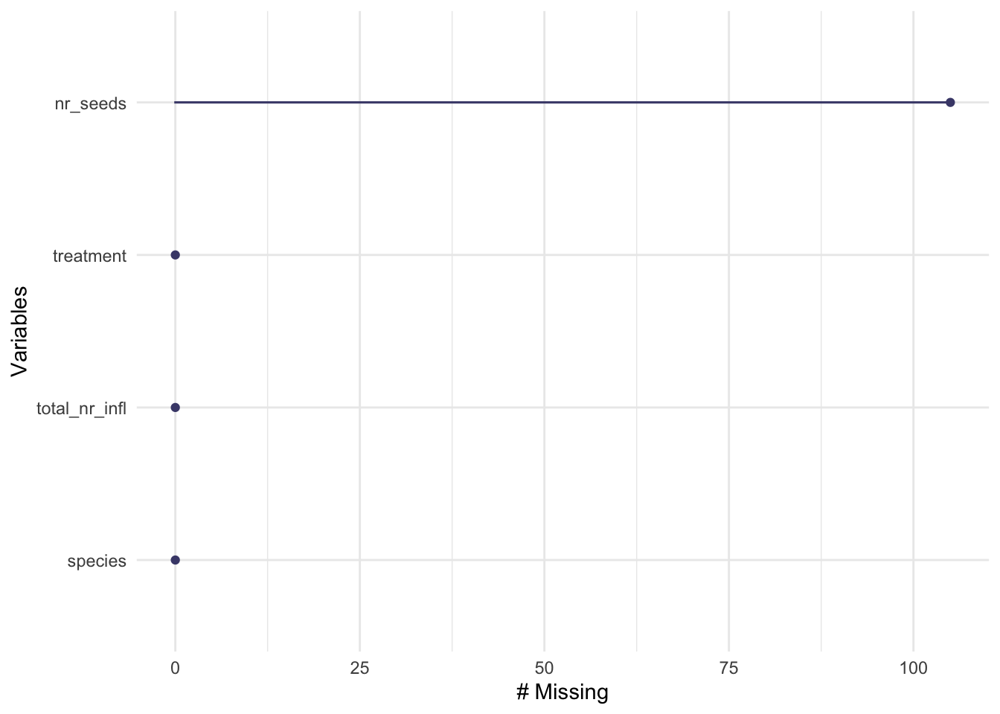
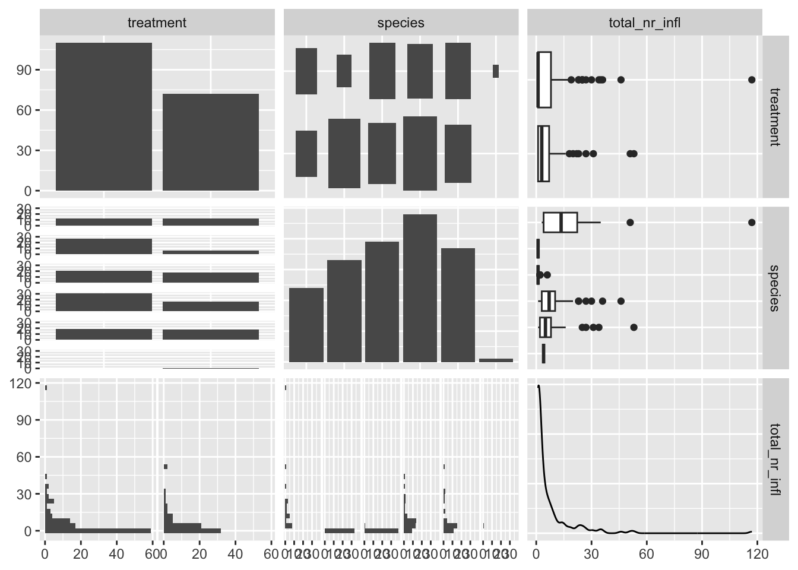
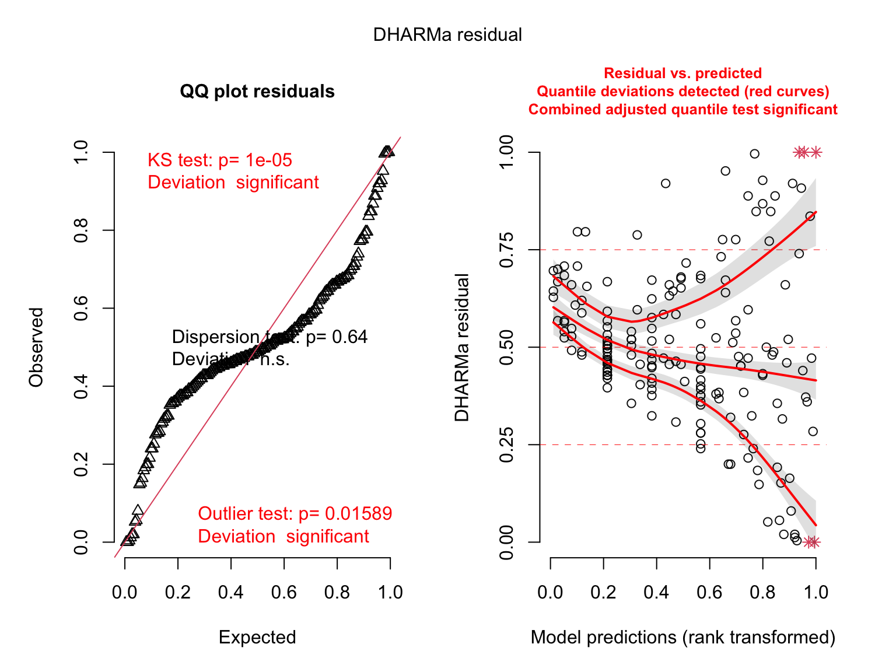
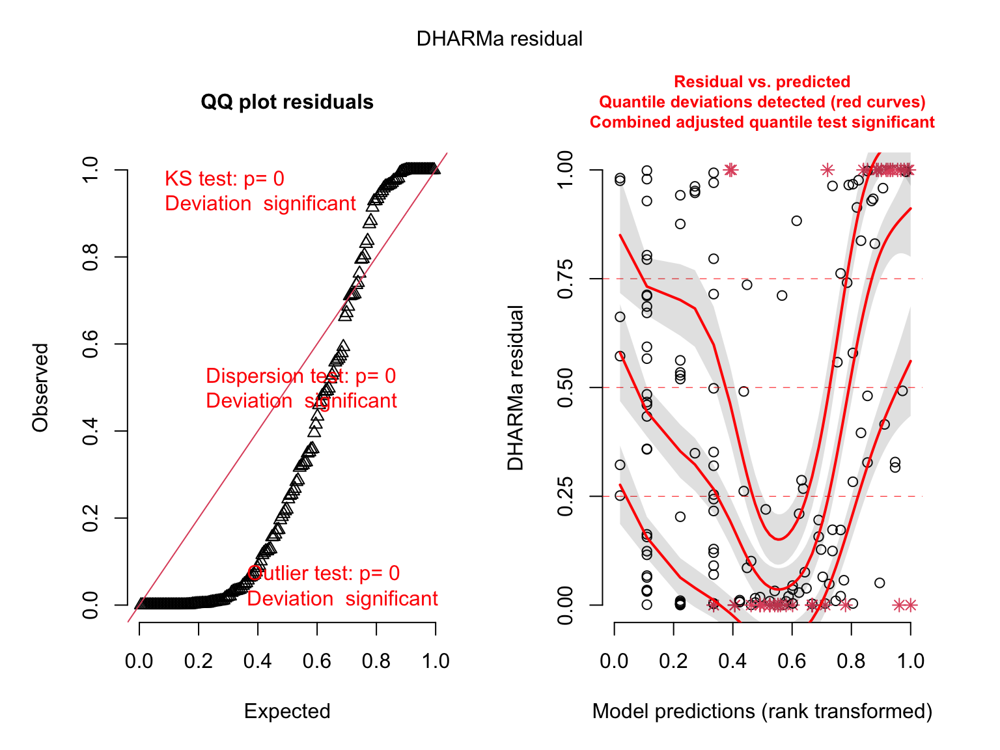
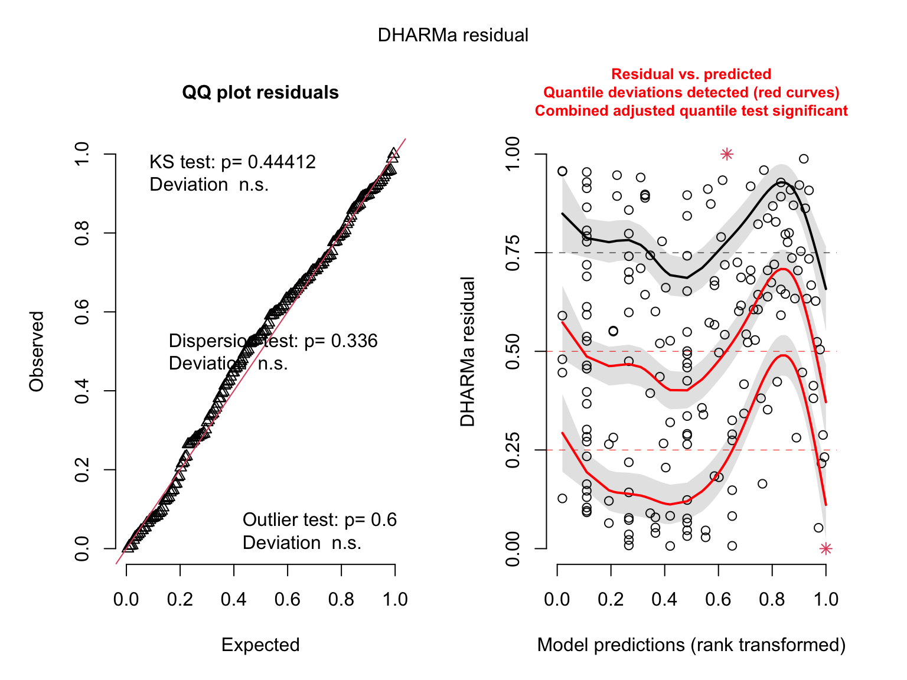
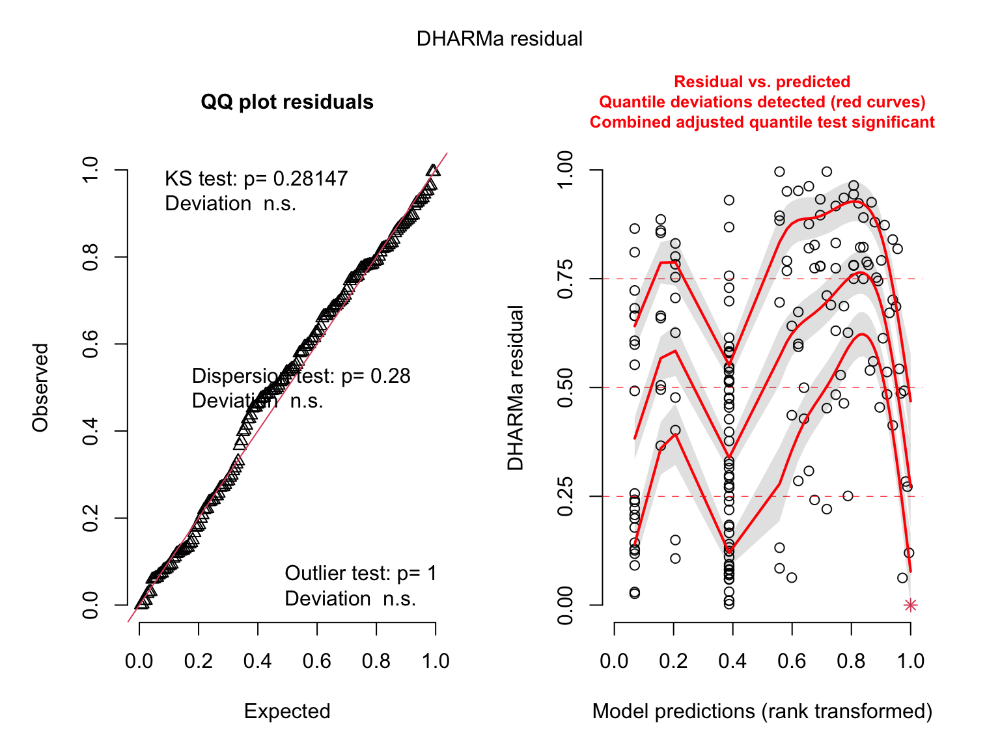
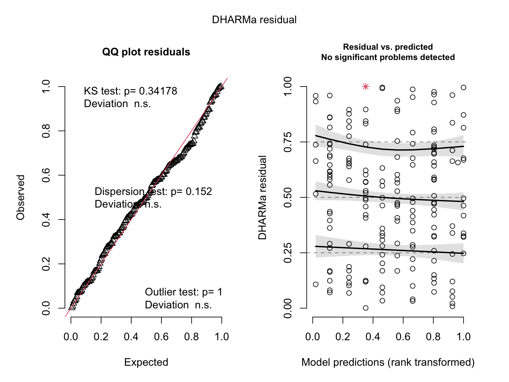
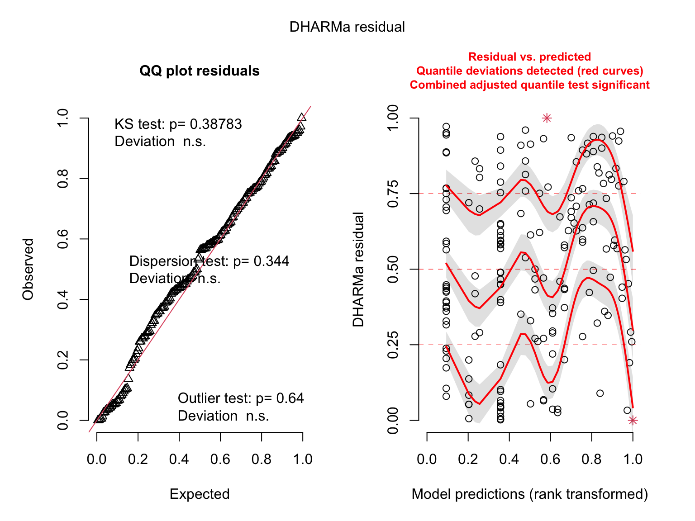
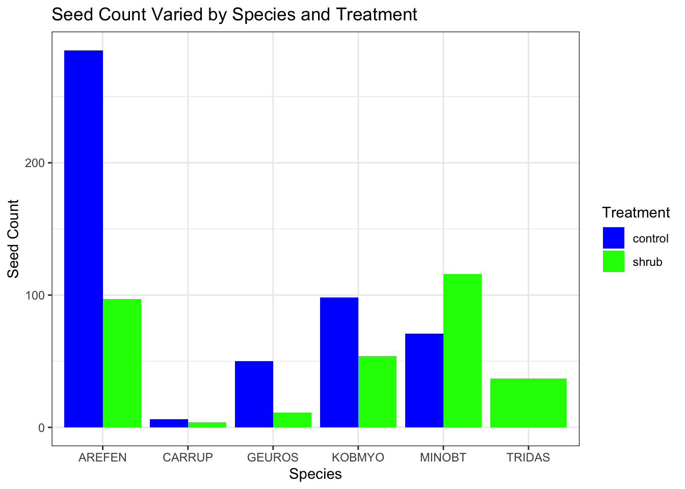

Kangaroo rats are small, mostly nocturnal rodents that are native to western North America in arid areas. The mounds they create can result in the formation of microhabitats that support unique plant communities and local species diversity (Guo 1). This in part is due to the fact that these mounds possess more organic matter to promote plant growth (Davidson and Lightfoot 1). Although there is evidence of more plant growth on these mounds, there is not much data on the composition of the seed bank on kangaroo rat mounds (Moorhead et.al). Therefore this analysis serves to understand how total seed number differs between kangaroo rat mound locations in a Chihuahuan Desert Grassland. We are testing the null hypothesis that seed numbers do not different between kangaroo rat mound locations against the alternative hypothesis that seed numbers do differ between kangaroo rat mound locations.
Methods
The data from the dataset was compiled by conducting an experiment in which 10 kangaroo rat mounds were randomly selected to collect soil samples from. In addition, subsamples were taken from each mound and grouped into 4 main categories: base of the mound (B), one meter from base samples (S), six meters from base samples at the edge of black grama glass clumps (E), and six meters from base samples in the interspace between black grama grass clumps (I). Soil samples were then dried in an oven for 48 hours at 50 C before being sifted using a sieve to capture small seeds. Eight taxa of seeds were targeted: Cryptantha crassisepala, Descurainia pinnata, Phacelia integrifolia, and Plantago patagonica (spring annuals), Astragalus missouriensis, Lesquerella fendleri, and Oenothera species (perrenial forbs that flower in the spring), and Sphaeralacea species (perennail forb that flowers in the fall). To organize these data, the column names were renamed to be more informative using the rename() function.
kangaroo_data <-read_csv(here("data", "kangaroo_mound_data.csv")) %>%# rename columns to be more informativerename(c("mound"="mnd", "direction"="dir", "microhabitat"="loc", "seed_count"="seeds"))
Next, a visualization of the missing data were created which showed there were no missing data.
Code
gg_miss_var(kangaroo_data)
Figure 1: Missing Data. Number of missing data entries on the x-axis and variables on the y-axis. Plots correspond to number of missing data entries for each variable.
To determine whether seed numbers differ between kangaroo rat mound locations an ANOVA test was conducted. First the assumptions for this test were checked including normality and variance.
Code
# create different data frames for each moundmound_B <- kangaroo_data %>%filter(microhabitat =="B")mound_D <- kangaroo_data %>%filter(microhabitat =="D")mound_E <- kangaroo_data %>%filter(microhabitat =="E")mound_I <- kangaroo_data %>%filter(microhabitat =="I")# create histograms for each speciesmound_B_hist <-ggplot(data = mound_B, aes(x = seed_count)) +geom_histogram(bins =20) +labs(x ="Seed Count", y ="Count") +theme_bw() +theme(panel.grid =element_blank(),text =element_text(family ="Times New Roman") )mound_D_hist <-ggplot(data = mound_D, aes(x = seed_count)) +geom_histogram(bins =20) +labs(x ="Seed Count", y ="Count") +theme_bw() +theme(panel.grid =element_blank(),text =element_text(family ="Times New Roman") )mound_E_hist <-ggplot(data = mound_E, aes(x = seed_count)) +geom_histogram(bins =20) +labs(x ="Seed Count", y ="Count") +theme_bw() +theme(panel.grid =element_blank(),text =element_text(family ="Times New Roman") )mound_I_hist <-ggplot(data = mound_I, aes(x = seed_count)) +geom_histogram(bins =20) +labs(x ="Seed Count", y ="Count") +theme_bw() +theme(panel.grid =element_blank(),text =element_text(family ="Times New Roman") )
Code
# create QQ plots for each speciesmound_B_qq <-ggplot(data = mound_B, aes(sample = seed_count)) +stat_qq_line(linewidth =1, color ="blue") +stat_qq() +labs(x ="Theoretical", y ="Seed Count") +theme_bw() +theme(panel.grid =element_blank(),text =element_text(family ="Times New Roman") )mound_D_qq <-ggplot(data = mound_D, aes(sample = seed_count)) +stat_qq_line(linewidth =1, color ="blue") +stat_qq() +labs(x ="Theoretical", y ="Seed Count") +theme_bw() +theme(panel.grid =element_blank(),text =element_text(family ="Times New Roman") )mound_E_qq <-ggplot(data = mound_E, aes(sample = seed_count)) +stat_qq_line(linewidth =1, color ="blue") +stat_qq() +labs(x ="Theoretical", y ="Seed Count") +theme_bw() +theme(panel.grid =element_blank(),text =element_text(family ="Times New Roman") )mound_I_qq <-ggplot(data = mound_I, aes(sample = seed_count)) +stat_qq_line(linewidth =1, color ="blue") +stat_qq() +labs(x ="Theoretical", y ="Seed Count") +theme_bw() +theme(panel.grid =element_blank(),text =element_text(family ="Times New Roman") )# put all the plots together using the "patchwork" feature(mound_B_hist + mound_B_qq) / (mound_D_hist + mound_D_qq) / (mound_E_hist + mound_E_qq) / (mound_I_hist + mound_I_qq)
Figure 2. Visual checks for normality. Histograms of seed counts for each mound location. Bars represent number of seed counts in each bin. QQ plots of seed count. Points in QQ plot represent sample quantiles compared to theoretical quantiles from a normal distribution. Solid blue lines represent a 1:1 relationship between sample and theoretical quantiles.
Code
# shapiro tests to statistically test for normal distributionshapiro.test(mound_B$seed_count)
Shapiro-Wilk normality test
data: mound_B$seed_count
W = 0.27338, p-value < 2.2e-16
Code
shapiro.test(mound_D$seed_count)
Shapiro-Wilk normality test
data: mound_D$seed_count
W = 0.28007, p-value < 2.2e-16
Code
shapiro.test(mound_E$seed_count)
Shapiro-Wilk normality test
data: mound_E$seed_count
W = 0.33868, p-value < 2.2e-16
Code
shapiro.test(mound_I$seed_count)
Shapiro-Wilk normality test
data: mound_I$seed_count
W = 0.45561, p-value < 2.2e-16
Code
# check for equal variancescount_var <-leveneTest(seed_count ~ microhabitat, data = kangaroo_data)count_var
Levene's Test for Homogeneity of Variance (center = median)
Df F value Pr(>F)
group 3 14.474 2.66e-09 ***
1556
---
Signif. codes: 0 '***' 0.001 '**' 0.01 '*' 0.05 '.' 0.1 ' ' 1
Prior to our analysis, we checked assumptions for analysis of variance. We tested for equality of variances between groups using Levene’s test and found statistically significant differences in variances between groups (F(3, 1556) = 14.47, p < 0.0001, a = 0.05). We also visually assessed normality using histograms and QQ plots and statistically tested for normality of seed count using Shapiro-Wilk tests for each mound. All mounds indicated deviations from normality (mound B: W = 0.27, p < 0.0001, mound D: W = 0.28, p < 0.0001, mound E: W = 0.34, p < 0.0001, mound I: W = 0.46, p < 0.0001). Because of this, a Kruskal-Wallis test was run, as it is a non-parametric alternative to the ANOVA that does not need to meet required assumptions.
Code
kruskal.test(seed_count ~ microhabitat, data = kangaroo_data)
Kruskal-Wallis rank sum test
data: seed_count by microhabitat
Kruskal-Wallis chi-squared = 21.932, df = 3, p-value = 6.738e-05
The results of the Kruskal-Wallis test suggest there are significant differences of seed count between mound locations as the p-value is less than the significance level of 0.05. Therefore, the null hypothesis was rejected. To determine which pairs of mound locations differ in seed count, a pairwise wilcox test was conducted.
Code
# conduct a pairwise wilcox test to calculate pairwise comparisons between group levels with corrections for multiple testing; "BH" adjustmentpairwise.wilcox.test(kangaroo_data$seed_count, kangaroo_data$microhabitat, p.adjust.method ="BH")
Pairwise comparisons using Wilcoxon rank sum test with continuity correction
data: kangaroo_data$seed_count and kangaroo_data$microhabitat
B D E
D 0.2740 - -
E 0.2740 0.9000 -
I 4.1e-05 0.0026 0.0026
P value adjustment method: BH
Results
Based on the Kruskal-Wallis test run, we found that total seed number does differ between kangaroo rat mound locations (H(3) = 21.93, p < 0.0001). Pairwise comparisons using the Wilcoxon rank sum test with BH-adjusted p-values was run to compare the total seed counts between mound locations. This revealed that total seed count only differs between B and I (p < 0.0001), D and I ( p = 0.0026), and E and I mound locations (p = 0.0026), where B = base of kangaroo rat mound on mound, I = interspace between black grama grass clumps off mound, D = surrounding area of kangaroo rat mound on mound, and E = edge of black grama grass clumps off mound.
Code
# create visualization to show differing seed counts by mound locationggplot(data = kangaroo_data, aes(x = microhabitat,y = seed_count)) +# make each bar a different color to differentiate between mound locationsgeom_bar(stat ="identity", aes(fill = microhabitat)) +# change legend titlescale_fill_discrete(name ="Mound Location") +theme_classic() +labs (x ="Mound Location", y ="Seed Count", title ="Seed Count by Mound Location") +theme(text =element_text(family ="Times New Roman") )
Figure 3. Seed Count across Mound Locations. Mound location on x-axis and seed count on y-axis. Each mound location is represented with a different color where B (base of mound) is red, D (surrounding area) is green, E (edge of black grama grass clumps) is blue, and I (interspace between black grama glass clumps) is purple. Heights of bars represent total seed count at each location.
The above figure displays how seed count does vary across mound locations, specifically between B and I, D and I, as well as E and I.
Problem 2
Introduction
As the climate continues to change from anthropogenic induced emissions, environmental conditions that determine ecosystem composition alter. In Niwot Ridge, Colorado environmental conditions have began to drift from the status quo due to alterations in temperature, soil moisture, and precipitation (Seaver, 2022). The new state of the environment has made it particularly hospitable for woody shrub establishment, altering the composition of the entire ecosystem to an alpine ecosystem. This phenomena is known as shrubification and could affect the success, and failure, of the different native plant species. Environmental changes that a parrental plant experiences can directly affect their output of seed quantity and the relative seed quality, i.e. seed coat thickness and structure which can influence endosperm reserves for an embryo (Sultan, 2000; Lacey et. al. 1997). The greater number of seeds produced is suggested to greatly improve an organisms fitness as it has a greater chance of successful reproduction (Primack, 1987). Moreover, an increase in seed number also increases the genetic diversity within that species population, increasing species survival (Sulatn, 2000). By understanding what factors predict the seed production/count of a plant, we may better understand how to maintain and restore plant species and ecosystems. Our analysis is particularly interested in how seed count varies based on shrubification (treatment), plant species, and the number of inflorescence on a plant, as well as exploring if these factor represent the simplest model to predict seed count. We will be testing the null hypothesis that there is no significant relationship between shrubification (treatment), species, and number of inflorescence as predictors with seed count, with the alternative hypothesis that at least one of these variables does have a significant relationship to explain seed count.
Methods
To conduct this study, five alpine species were sampled from 12 pairs of plots, each pair having either an open plot or shrub treatment. Samples were collected in the form of dried buds that were then crushed and the viable seeds were counted and weighed. The individual plants that each dried bud came from was cataloged along with its species and other characteristics to form the data set. To organize the data in a clear fashion, more informative labels were given to each column and only seed count, species, treatment, and total number of inflorescenses data were kept.
Code
#read in libraries# model packageslibrary(MASS) library(lme4)library(glmmTMB) library(DHARMa)library(MuMIn)library(ggeffects)library(lmtest)library(broom)library(tidyverse)library(here)library(naniar)library(skimr)library(GGally)library(flextable)#read in dataseed <-read_csv(here("data", "shrubstudy_seed_ctwt.ms.data.csv")) %>%#making column names cleanerclean_names() %>%#only keeping columns needed dplyr::select(treatment, species, total_nr_infl, nr_seeds)
Next to get acquainted with the data, we created a histogram of seed count:
Figure 4. Histogram of Seed Count Seed count is represented on the x axis and frequency or count is on the y axis.
This visualization demonstrated the grouping of data, specifically that count tends to be less than 50 throughout the data set. Next, a visualization of missing data was created which showed that there were over 100 missing observations for seed count.
Code
#visualizing the missing datagg_miss_var(seed)

** Figure 5. Missing Data Visualization** Each column is displayed on the y-axis with the number of missing variables on the x-axis, displaying that the column for number of seeds has missing data.
Since the visualization indicated missing data within the data set which could interfere with our analysis, we removed all observations with missing data by creating a subset of data.
Code
#creating a subset of the data frame without missing valuesseed_subset <- seed %>%drop_na(nr_seeds)
With this new data set, we further explored each variable by using the skim function.
Code
#skimming the data frameskim(seed_subset)
Data summary
Name
seed_subset
Number of rows
182
Number of columns
4
_______________________
Column type frequency:
character
2
numeric
2
________________________
Group variables
None
Variable type: character
skim_variable
n_missing
complete_rate
min
max
empty
n_unique
whitespace
treatment
0
1
5
7
0
2
0
species
0
1
6
6
0
6
0
Variable type: numeric
skim_variable
n_missing
complete_rate
mean
sd
p0
p25
p50
p75
p100
hist
total_nr_infl
0
1
7.15
12.56
1
1.00
2.5
7.00
117
▇▁▁▁▁
nr_seeds
0
1
14.55
28.62
0
1.25
5.0
13.75
285
▇▁▁▁▁
This summary reiterated that both treatment and species are categorical predictors, whereas total number of inflorescence is numerical. Additionally, the function presented mean values for each variable across the entire data frame. To explore relationships between predictor variables we created a pairs plot rather than a Pearson’s r correlation plot because of the categorical predictors. Based on the plot, none of the predictor variables appear to have a strong relationship with another that could induce colinearity.
Code
#using data subsetseed_subset %>%#selecting all variables dplyr::select(treatment:total_nr_infl) %>%#creating plotggpairs()

Figure 6. Relationships Between Predictor Variables Each plot in the grid compares two predictor variables on the x and y axis and creates a visualization.
Since the data has been organized, clean from missing values, and explored we began to address our question of how does seed count vary with plot type(treatment), plant species, and total number of inflorescence and furthermore determine the most accurate and simplest model that can explain seed count. This was done first by creating a series of generalized linear models with different distributions.
Code
#creating a linear modelseed1 <-lm(nr_seeds ~ treatment + species + total_nr_infl, data = seed_subset)#creating a generalized linear model with poisson distributionseed2 <-glm(nr_seeds ~ treatment + species + total_nr_infl, data = seed_subset, family ="poisson")#creating a glm with negative binomial distributionseed3 <-glm.nb(nr_seeds ~ treatment + species + total_nr_infl, data = seed_subset)
We then checked the assumptions of generalized linear models visually by looking for randomly distributed residuals and normality.
Code
# check diagnostics of first model which is a linear regressionplot(simulateResiduals(seed1))

Figure 7. Linear Model Diagnostics The left plot displays normality of data and the right displays randomness of residuals.
Based on the visualization, the linear model does not conform to the data as it is not normally distributed and is not homoscedastic. We next checked the second model, a generalized linear model with a poisson distribution.
Code
#check diagnostics of second modelplot(simulateResiduals(seed2))

Figure 8. Generalized Linear Model 2 Diagnostics The left plot displays normality of data and the right displays randomness of residuals.
Again, the visualization indicates that the data is not normally distributed and is not homoscedastic. We then tried the third model, a generalized linear model with a negative binomial distribution.
Code
#check diagnostics of the third modelplot(simulateResiduals(seed3))

Figure 9. Generalized Linear Model 3 Diagnostics The left plot displays normality of data and the right displays randomness of residuals.
This visualization displayed the most normally distributed data with residuals that were randomly dispersed evenly. To confidently determine the best model to use, we will used Akaike’s Information Criterion (AIC) values. AIC factor in both the predictability and complexity of each model, reporting the lowest AIC value to the model which predicts the most about seed count in the simplest way. This model was the generalized linear model (GLM) with the negative binomial distribution, model 3.
Code
#selecting best model based on AIC valuemodel.sel(seed1, seed2, seed3)
Next, since we are confident in using the GLM with a negative binomial we then explored other models with fewer predictors that fit this same form.
Code
#creating models with only treatment and infl as predictorsseed3_a <-glm.nb(nr_seeds ~ treatment + total_nr_infl, data = seed_subset)#model with only treatment and species as predictorsseed3_b <-glm.nb(nr_seeds ~ treatment + species, data = seed_subset)#model with only species and infl as predictorsseed3_c <-glm.nb(nr_seeds ~ species + total_nr_infl, data = seed_subset)
All of these models were checked visually to meet the required assumptions.
Code
simulateResiduals(seed3_a, plot =TRUE)

Object of Class DHARMa with simulated residuals based on 250 simulations with refit = FALSE . See ?DHARMa::simulateResiduals for help.
Scaled residual values: 0.5985781 0.2369761 0.6073598 0.1989777 0.8108107 0.8652213 0.722944 0.6595381 0.8010041 0.996 0.8756964 0.7909078 0.962469 0.5144915 0.9642997 0.2697532 0.8224198 0.6896929 0.7497912 0.4019165 ...
Figure 10. Generalized Linear Model 3.a Diagnostics The left plot displays normality of data and the right displays randomness of residuals.
The plot appeared to be homoscedastic and uniform.
Code
simulateResiduals(seed3_b, plot =TRUE)

Object of Class DHARMa with simulated residuals based on 250 simulations with refit = FALSE . See ?DHARMa::simulateResiduals for help.
Scaled residual values: 0.9324214 0.7371427 0.9580447 0.1867698 0.8169644 0.7758247 0.6754601 0.3935522 0.4752359 0.6571672 0.4759411 0.4216924 0.7252339 0.2593727 0.8075793 0.7395959 0.7541286 0.5658095 0.6817916 0.1681556 ...
Figure 11. Generalized Linear Model 3.b Diagnostics The left plot displays normality of data and the right displays randomness of residuals.
The plot appeared to be extremely uniform and homoscedastic.
Code
simulateResiduals(seed3_c, plot =TRUE)

Object of Class DHARMa with simulated residuals based on 250 simulations with refit = FALSE . See ?DHARMa::simulateResiduals for help.
Scaled residual values: 0.9514119 0.5643098 0.944177 0.004826512 0.7880112 0.8409382 0.65073 0.4596078 0.5714663 0.568051 0.7362462 0.6730602 0.9350107 0.3719007 0.9387881 0.7055389 0.7340206 0.4960083 0.5669025 0.2005985 ...
Figure 12. Generalized Linear Model 3.c Diagnostics The left plot displays normality of data and the right displays randomness of residuals.
The plot appeared to be relatively uniform and homoscedastic. We then compared all of the generalized linear models with negative binomial distributions with each other using AIC and found model 3b to be the lowest which only has predictor variables treatment and species.
Code
#comparing all negative binomial glmsmodel.sel(seed3, seed3_a, seed3_b, seed3_c)
We found that model 3b which used treatment and species as predictor variables for seed count to be the most suitable. This model was chosen because it met all assumptions of generalized linear regression and has the lowest AIC value in comparison to all other models, implying that it best explains the response variable in the simplest way. The model summary is displayed here:
Code
#displaying model summarysummary(seed3_b)
Call:
glm.nb(formula = nr_seeds ~ treatment + species, data = seed_subset,
init.theta = 0.7555861374, link = log)
Deviance Residuals:
Min 1Q Median 3Q Max
-2.3518 -1.1203 -0.3413 0.1850 3.0659
Coefficients:
Estimate Std. Error z value Pr(>|z|)
(Intercept) 3.7064 0.2556 14.498 < 2e-16 ***
treatmentshrub -0.3528 0.1901 -1.856 0.06352 .
speciesCARRUP -3.2736 0.3487 -9.389 < 2e-16 ***
speciesGEUROS -1.8171 0.3082 -5.895 3.75e-09 ***
speciesKOBMYO -0.6193 0.2930 -2.114 0.03452 *
speciesMINOBT -0.8756 0.3067 -2.855 0.00431 **
speciesTRIDAS 0.2573 1.1900 0.216 0.82879
---
Signif. codes: 0 '***' 0.001 '**' 0.01 '*' 0.05 '.' 0.1 ' ' 1
(Dispersion parameter for Negative Binomial(0.7556) family taken to be 1)
Null deviance: 314.46 on 181 degrees of freedom
Residual deviance: 206.88 on 175 degrees of freedom
AIC: 1222.3
Number of Fisher Scoring iterations: 1
Theta: 0.7556
Std. Err.: 0.0872
2 x log-likelihood: -1206.3020
Code
seed3_b_table <-tidy(seed3_b) %>%# making p values round to three decimals and only state whether they are less than 0.001mutate(p.value =round(p.value, 3)) %>%# make p.value a character to adjust column to show rounded values and p-values less than 0.001mutate(p.value =case_when( p.value <0.001~"<0.001", TRUE~as.character(p.value))) %>%# using mutate to round each columnmutate(across(c("estimate", "std.error", "statistic"), round, 3)) %>%flextable() %>%# edit labelsset_header_labels(term ="Term", estimate ="Estimate",std.error ="Standard Error",statistic ="Z Value",p.value ="P-value")seed3_b_table
Term
Estimate
Standard Error
Z Value
P-value
(Intercept)
3.706
0.256
14.498
<0.001
treatmentshrub
-0.353
0.190
-1.856
0.064
speciesCARRUP
-3.274
0.349
-9.389
<0.001
speciesGEUROS
-1.817
0.308
-5.895
<0.001
speciesKOBMYO
-0.619
0.293
-2.114
0.035
speciesMINOBT
-0.876
0.307
-2.855
0.004
speciesTRIDAS
0.257
1.190
0.216
0.829
The model states that treatment and species (aside from “TRIDAS”) have a significant relationship with seed count which is denoted by the p-value from the Z statistic for that variable. This relationship is described by estimates of coefficients that give insight into the direction and strength of the relationship. Confidence intervals for each variable in describing its relationship to seed count is shown below.
The coefficient of determination for the model is 0.45 with a significance level of 0.05 out of a sampling of 182 plants, indicating that 45% of variance in seed count data can be explained by this model.
Moreover, the model suggests that the plant species “CARRUP” or Carex rupestris ssp. drummondiana has a significant negative relationship, where if all else is held constant, seed count is expected decrease by -3.3 units (with a standard error of .26). This negative relationship to seed count is consistent across the majority of species and can be visualized below:
Code
ggplot(seed3_b, aes(x = species, y = nr_seeds, fill = treatment)) +geom_bar(stat ="identity", position =position_dodge()) +scale_fill_manual(values =c("control"="blue", "shrub"="green")) +scale_color_manual(values =c("control"="blue", "shrub"="green")) +theme_bw() +labs(x ="Species", y ="Seed Count", title ="Seed Count Varied by Species and Treatment", fill ="Treatment", color ="Treatment")

Figure 13. Seed Count Varied by Species and Treatment The y-axis measures seed count, the x-axis is seperated by individual plant species, and the green bars represent the shrub treatment and blue bars represent the control treatment.
From the visualization it can be extrapolated that seed counts are larger for “AREFEN”, “CARRUP”, “GUEROS”, and “KOBMYO”in the control treatment, explaining the shrub treatment’s negative relationship towards seed count. Furthermore, it is apparent that seed count stays relatively similar for each treatment based on the species, with the exception of “AREFEN”.
Works Cited
Davidson, A.D., and D.C. Lightfoot. “Burrowing Rodents Increase Landscape Heterogeneity in a Desert Grassland.” Journal of Arid Environments, vol. 72, no. 7, 2008, pp. 1133–1145, https://doi.org/10.1016/j.jaridenv.2007.12.015.
Guo, Qinfeng. “Effects of Bannertail Kangaroo Rat Mounds on Small-Scale Plant Community Structure.” Oecologia, vol. 106, no. 2, 1996, pp. 247–256, https://doi.org/10.1007/bf00328605.
Moorhead, D. L., et al. “Cover of Spring Annuals on Nitrogen-Rich Kangaroo Rat Mounds in a Chihuahuan Desert Grassland.” American Midland Naturalist, vol. 120, no. 2, 1988, p. 443, https://doi.org/10.2307/2426018.
Seaver, M. 2022. Individual and community flowering phenology, seed counts and pollinator visitation rates in shrub and open plots across Niwot Ridge, 2019 - 2021. ver 1. Environmental Data Initiative. https://doi.org/10.6073/pasta/edc4ab2faf7dd96cd1deac1544d5f2b9 (Accessed 2023-06-10).
Sultan, Sonia E. “Phenotypic Plasticity for Plant Development, Function and Life History.” Trends in Plant Science, vol. 5, no. 12, 2000, pp. 537–542, https://doi.org/10.1016/s1360-1385(00)01797-0.
Lacey, Elizabeth P., et al. “Parental Effects on Seed Mass: Seed Coat but Not Embryo/Endosperm Effects.” American Journal of Botany, vol. 84, no. 11, 1997, pp. 1617–1620, https://doi.org/10.2307/2446624.
Primack, Richard B. “Relationships among Flowers, Fruits, and Seeds.” Annual Review of Ecology and Systematics, vol. 18, no. 1, 1987, pp. 409–430, https://doi.org/10.1146/annurev.es.18.110187.002205.